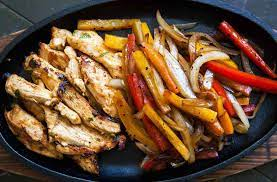

Chicken Fajitas

Description
These are simple chicken fajitas. I recommend using a cast iron
skillet if you have one, but a regular frying pan will work as well!
Ingredients
- Chicken breast (1 lb for 2 people)
- Bell peppers
- Onion
- Olive oil
- Tortillas
- Salt
- Pepper
- Cumin
- Cheese
- Sour cream
Directions
- Chop vegetables.
- Slice chicken into thin strips.
- Heat up oil in pan or cast iron skillet.
- Cook vegetables in pan.
- Set vegetables aside, cover to keep warm.
- Season and cook chicken.
- As chicken finishes cooking, warm tortillas.
- Place vegetables and chicken in tortillas.
- Top with cheese and sour cream.